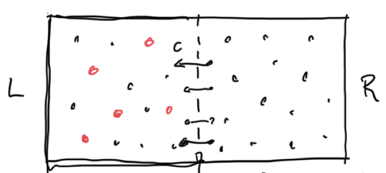
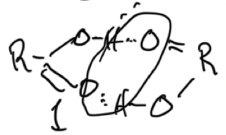
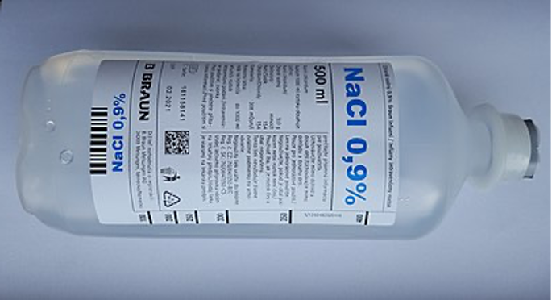
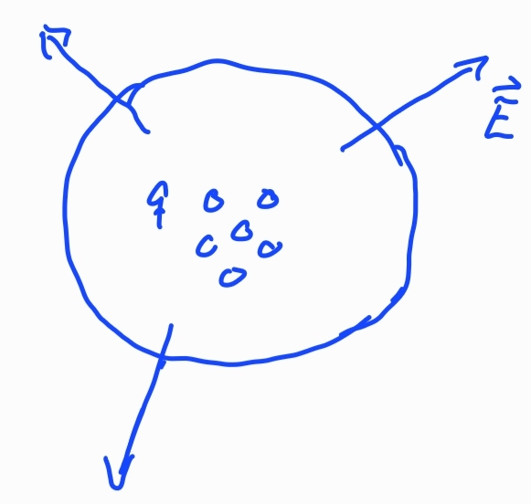
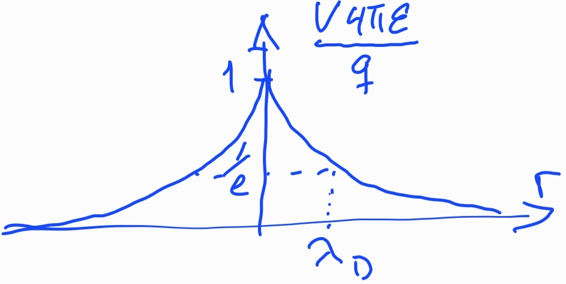
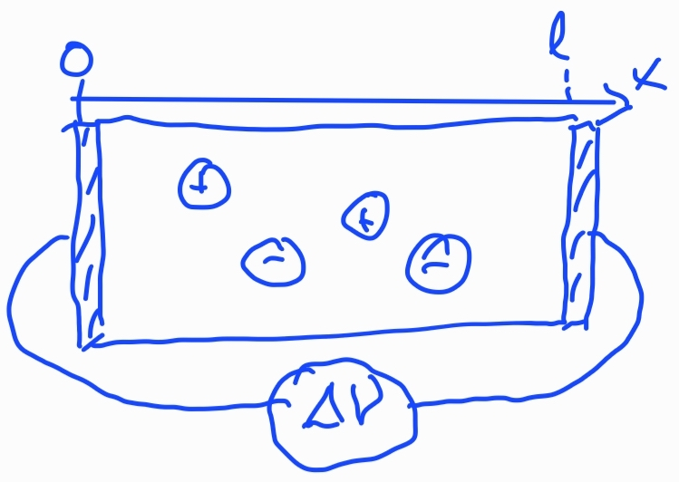
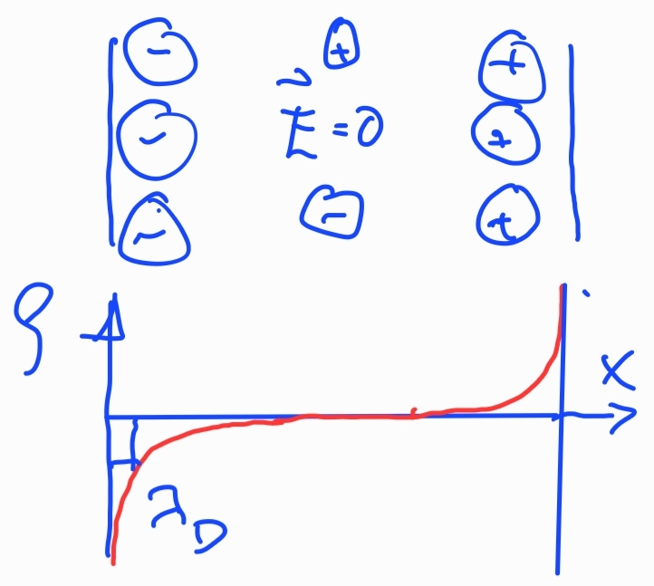
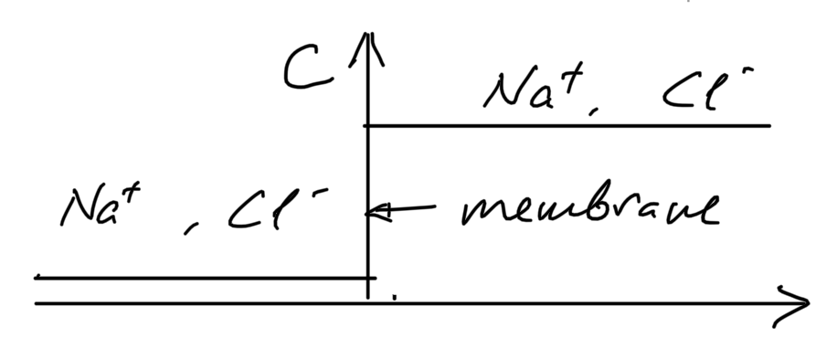
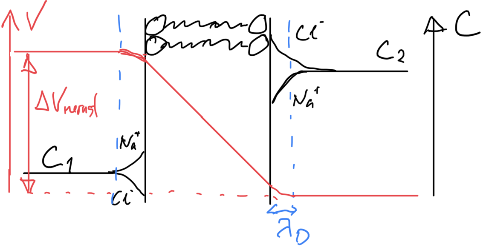
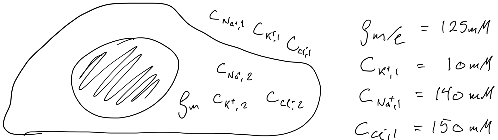

Processes at membranes
Lecture notes, weeks 11–14. Nelson, chapter 7 and sections 11.1
Throughout, \(\Delta X = X_\text{in} - X_\text{out}\) is the difference across a membrane (inside minus outside), and concentrations \(c\) are number densities unless they are given in mM. With molar concentrations, replace \(k_B\) by the gas constant \(R = N_Ak_B\).
Osmosis

A box of fixed volume is divided in two by a membrane that only the solvent (black) can cross. The red solute particles are stuck on the left, and they are few: \(N_2\ll N_1\). In a cell, the black particles are water and the red ones are ions, sugars and proteins.
- What happens? How do the water molecules distribute between left and right?
- If the solution is dilute, the solute particles hardly interact with each other. They move around in the water like the molecules of an ideal gas move around in empty space.
- So the solute exerts its own “ideal gas” pressure on the membrane, which it cannot cross. The water does not care: it can move freely across.
The extra pressure on the side with solute is then
\[ \Delta P = c_2 k_BT, \qquad c_2 = \frac{N_2}{V_L}. \]
Can such a simple argument be right? Section 3 shows that it is, for dilute solutions, from a general thermodynamic argument.
The van ’t Hoff relation
\[ \Delta P = k_BT\sum_i \phi_i\, \Delta c_i \qquad\text{or, in molar units,}\qquad \Delta P = RT\sum_i \phi_i\,\Delta c_i , \tag{1}\]
where \(\phi_i\) is the number of independently moving particles that one molecule of solute \(i\) gives in solution. It is the number of “ideal gas” particles that counts, not their size or chemistry:
- NaCl → Na⁺ + Cl⁻: \(\phi=2\)
- glucose → glucose: \(\phi = 1\)
- carboxylic acid → dimers: \(\phi = 1/2\)

Numbers

Physiological saline contains 9 g NaCl per litre. With the molar mass \(23 + 35.5 = 58.5\) g/mol this is \(c = 0.15\) mol/L \(= 150\) mol/m³. If a cell with this salt content were put in pure water and could not swell, the pressure would be
\[ \Delta P = 2cRT = 2\cdot 150\cdot 8.3\cdot 300\ \text{Pa} \approx 7.5\times10^5\ \text{Pa} = 7.5\ \text{bar}, \]
more than in the tyres of a racing bike. A cell membrane withstands a few kPa at most. This is why cells burst in pure water.
Chemical potential and the Gibbs–Duhem relation
Equilibrium with respect to particle exchange is equality of chemical potential, not of concentration. At fixed \(T\) and \(P\), the relevant definition is
\[ \mu_i = \left(\frac{\partial G}{\partial N_i}\right)_{T,P,N_{j\neq i}} . \]
Adding particles at fixed \(T\), \(P\) and composition does not change any \(\mu_i\), and each added particle of type \(i\) increases \(G\) by \(\mu_i\). Since \(G\) is extensive,
\[ G = \sum_i N_i\mu_i . \]
The total differential of this expression is \(dG = \sum_i\mu_i\, dN_i + \sum_i N_i\, d\mu_i\). Comparing with the thermodynamic identity \(dG = -S\,dT + V\,dP + \sum_i\mu_i\, dN_i\) gives the Gibbs–Duhem relation:
\[ \sum_i N_i\, d\mu_i = -S\,dT + V\,dP \qquad\Rightarrow\qquad \sum_i c_i\, d\mu_i = dP \quad (T \text{ constant}). \tag{2}\]
The chemical potentials of the components cannot all change independently: with \(I\) components only \(I-1\) of them are independent.
Ideal (dilute) solutions have no volume change and no heat of mixing, and
\[ \mu_i = \mu_i^0(P,T) + k_BT\ln c_i \]
(see Entropy and entropic forces). External fields add the potential energy of each particle, \(\mu_\text{tot} = \mu_\text{int} + U_\text{ext}\). For an ion with charge \(q = ze\) in an electric potential \(\mathcal V\), \(U_\text{ext} = q\mathcal V\).
Osmotic flow
The argument at the start only gave the pressure in equilibrium. How do the flux of water and the pressure develop in time, if the two sides start at the same pressure?
Linear irreversible thermodynamics
Close to equilibrium, fluxes are linear in the thermodynamic driving forces, the gradients of chemical potential and temperature:
\[ \begin{aligned} J_1 &= -l_{11}\nabla\mu_1 - l_{12}\nabla\mu_2 - l_{1q}\nabla T\\ J_2 &= -l_{21}\nabla\mu_1 - l_{22}\nabla\mu_2 - l_{2q}\nabla T\\ J_q &= -l_{q1}\nabla\mu_1 - l_{q2}\nabla\mu_2 - l_{qq}\nabla T \end{aligned} \]
The \(l_{ij}\) are the linear transport coefficients. Comparing \(J_1 = -l_{11}(\partial\mu_1/\partial c_1)\nabla c_1\) with Fick’s law \(J_1 = -D_1\nabla c_1\) gives \(l_{11} = D_1/(\partial\mu_1/\partial c_1)\), which for an ideal solution is \(l_{11} = D_1c_1/k_BT\). The off-diagonal coefficients describe species that drag each other along. Onsager showed that the matrix is symmetric, \(l_{ij} = l_{ji}\).
Osmotic flux and pressure in general
Across a membrane we use differences instead of gradients. Let species 1 be water and species 2 the solute, at constant \(T\), and let \(J_1\) be the flux of water into the cell:
\[ J_1 = -l_{11}\,\Delta\mu_1 - l_{12}\,\Delta\mu_2, \qquad J_2 = -l_{21}\,\Delta\mu_1 - l_{22}\,\Delta\mu_2 . \]
The solute cannot cross, so \(J_2 = 0\) for any forces: \(l_{21} = l_{22} = 0\), and by Onsager symmetry \(l_{12} = 0\) as well. So only the chemical potential of water matters for the flow of water:
\[ J_1 = -l_{11}\,\Delta\mu_1 . \]
To relate \(\Delta\mu_1\) to the solute, use the Gibbs–Duhem relation Eq. 2, \(c_1\Delta\mu_1 + c_2\Delta\mu_2 = \Delta P\):
\[ J_1 = -\frac{l_{11}}{c_1}\left(\Delta P - c_2\,\Delta\mu_2\right). \]
This holds for any solution. For an ideal solution, \(\Delta\mu_2 = k_BT\,\Delta\ln c_2 \approx k_BT\,\Delta c_2/c_2\), so
\[ J_1 = -\frac{l_{11}}{c_1}\big(\Delta P - k_BT\,\Delta c_2\big). \tag{3}\]
Water flows into the side with more solute until the pressure there has risen to \(\Delta P = k_BT\,\Delta c_2\): the van ’t Hoff relation, now derived without any picture of solute particles hitting a wall. Eq. 3 also says how fast: the volume flux is proportional to \(k_BT\Delta c_2 - \Delta P\), with a coefficient (the filtration coefficient \(L_p\)) set by how easily water gets through the membrane.
Charges and screening

Gauss’s law and the definition of the potential, \(\vec E = -\nabla\mathcal V\), give Poisson’s equation:
\[ \nabla\cdot\vec E = \frac{\rho}{\varepsilon}, \qquad \nabla^2\mathcal V = -\frac{\rho}{\varepsilon}, \]
where \(\rho\) is the charge density and \(\varepsilon = \varepsilon_r\varepsilon_0\) the permittivity. Oils and solids have \(\varepsilon_r\sim 2\)–10; water has \(\varepsilon_r\approx 80\), because its molecules are strongly polar and turn to oppose an applied field.
One charge. The flux of \(\vec E\) through any sphere around a point charge \(q\) is \(q/\varepsilon\), so
\[ \vec E(r) = \frac{q}{4\pi\varepsilon r^2}\hat r, \qquad \mathcal V(r) = \frac{q}{4\pi\varepsilon r}, \qquad \vec F = \frac{q_1q_2}{4\pi\varepsilon r^2}\hat r . \tag{4}\]
A natural length scale is the Bjerrum length \(\lambda_B = e^2/(4\pi\varepsilon k_BT)\), the distance at which two unit charges interact with energy \(k_BT\). In water at room temperature \(\lambda_B\approx 0.7\) nm; in oil it is 40 times longer. This is why salts dissolve in water but not in oil, and why ions cannot cross a lipid membrane without help.
Debye screening
In salt water the other ions move until they screen a charge, while thermal motion spreads them out. The Boltzmann distribution gives the concentration of ion species \(i\) (valence \(z_i\)) in a potential \(\mathcal V(\vec r)\) that vanishes far away:
\[ c_i(\vec r) = c_i^\infty\, e^{-z_ie\mathcal V(\vec r)/k_BT}. \]
The charge density \(\rho = \sum_i z_ie\,c_i\) in Poisson’s equation then gives the Poisson–Boltzmann equation,
\[ \nabla^2\mathcal V = -\frac{e}{\varepsilon}\sum_i z_ic_i^\infty\, e^{-z_ie\mathcal V/k_BT}. \]
Where \(e\mathcal V\ll k_BT\) we can expand \(e^{-x}\approx 1-x\). The zeroth-order term vanishes because the bulk is neutral, \(\sum_iz_ic_i^\infty = 0\), and we get the linear Debye–Hückel equation
\[ \nabla^2\mathcal V = \frac{\mathcal V}{\lambda_D^2}, \qquad \lambda_D = \left(\frac{\varepsilon k_BT}{e^2\sum_i z_i^2c_i^\infty}\right)^{1/2} = \left(4\pi\lambda_B\sum_iz_i^2c_i^\infty\right)^{-1/2}. \tag{5}\]

Around a point charge the solution is \(\mathcal V(r) = \dfrac{q}{4\pi\varepsilon r}e^{-r/\lambda_D}\), and near a flat charged surface \(\mathcal V(x) = \mathcal V_0\, e^{-x/\lambda_D}\). Electrostatic interactions in the cell are short-ranged: in physiological saline (150 mM NaCl) \(\lambda_D\approx 0.8\) nm, comparable to the size of a small molecule.
Charges at membranes: the Nernst potential


Consider an electrolyte between two electrodes with a potential difference. How do the ions distribute, and what does the field look like? In the bulk the field is screened; it is only non-zero in charged layers of thickness \(\lambda_D\) at the walls.
Use the chemical potential of an ion of charge \(q = ze\):
\[ \mu_\text{tot} = \mu_0 + k_BT\ln\frac{c}{c_0} + q\mathcal V . \]
In equilibrium \(d\mu_\text{tot}/dx = 0\):
\[ k_BT\,\frac{d\ln c}{dx} = -q\,\frac{d\mathcal V}{dx} \quad\Rightarrow\quad k_BT\ln\frac{c_\text{in}}{c_\text{out}} = -q\left(\mathcal V_\text{in} - \mathcal V_\text{out}\right). \]
The potential difference that balances a concentration difference of a permeant ion is the Nernst potential:
\[ \Delta\mathcal V = \mathcal V^\text{Nernst} = -\frac{k_BT}{ze}\ln\frac{c_\text{in}}{c_\text{out}} . \tag{6}\]
The thermal voltage is \(k_BT/e\approx 25\) mV at room temperature, so a factor 10 in concentration gives about 60 mV.

What happens if no ions can cross the membrane? If only one species can? If both can?
Example: only Na⁺ permeates. Far from the membrane each side is neutral, with equal Na⁺ and Cl⁻ concentrations. Sodium diffuses from high to low concentration. Each ion that crosses carries charge, and a potential difference builds up until it equals the Nernst potential of sodium. Only a tiny number of ions has to cross for this. The excess charges sit in thin layers on each side of the membrane, and chloride rearranges to screen them, within a Debye length.

Donnan equilibrium
A cell contains negatively charged macromolecules, mostly proteins, that cannot cross the membrane. The small ions Na⁺, K⁺ and Cl⁻ can.

In equilibrium every permeant ion obeys Eq. 6 with the same \(\Delta\mathcal V\). With 1 for outside and 2 for inside:
\[ \frac{e\,\Delta\mathcal V}{k_BT} = -\ln\frac{c_{\text{Na},2}}{c_{\text{Na},1}} = -\ln\frac{c_{\text{K},2}}{c_{\text{K},1}} = \ln\frac{c_{\text{Cl},2}}{c_{\text{Cl},1}}, \]
or, exponentiated, the Donnan relation
\[ \frac{c_{\text{Na},2}}{c_{\text{Na},1}} = \frac{c_{\text{K},2}}{c_{\text{K},1}} = \frac{c_{\text{Cl},1}}{c_{\text{Cl},2}} \equiv r . \]
Together with neutrality inside the cell,
\[ c_{\text{Na},2} + c_{\text{K},2} - c_{\text{Cl},2} + \frac{\rho_m}{e} = 0 , \]
this gives three equations for the three unknown concentrations: \(150r - 150/r - 125 = 0\), so \(r = 1.5\) and
\[ c_{\text{Na},2} = 210\ \text{mM},\quad c_{\text{K},2} = 15\ \text{mM},\quad c_{\text{Cl},2} = 100\ \text{mM},\qquad \Delta\mathcal V = -\frac{k_BT}{e}\ln 1.5 \approx -10\ \text{mV}. \]
Trapped macroions alone create a resting potential. But there is a problem. The macroions are few (each carries many charges), so the inside has \(210 + 15 + 100 = 325\) mM of osmotically active particles against 300 mM outside. The resulting osmotic pressure is
\[ \Delta P = RT\,\Delta c = 8.3\cdot 310\cdot 25\ \text{Pa} \approx 6.4\times10^4\ \text{Pa} \]
(25 mM = 25 mol/m³), about 0.6 bar. A cell without a cell wall would burst. Plants and bacteria have rigid walls and live with this “turgor” pressure. Animal cells instead pump ions, as described in Membrane potentials and ion pumps.